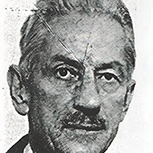
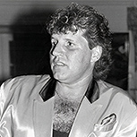
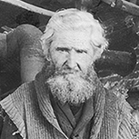
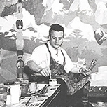

Allez au contenu
Chasse aux épigraphes
dans la ville de Québec
Accueil
Chasse aux épigraphes
Galerie de personnages
Carte
Accueil
Chasse aux épigraphes
Galerie de personnages
Carte
Menu
Galerie des personnages
Filtrer par type d'incide
Personnages
Objets
Lieux
Filtrer par secteur d'activité
Sports et spectacles
Sciences et lettre
Économie et politique
Arts visuels
Pour enlever les filtres, appuyez sur le bouton suivant
Edmund Alleyn
Philippe-Joseph Aubert de Gaspé
Henriette Belley
Marthe Caillaud-Simard

Robert Blatter
Camille Henry

Johnny Farago
Joseph Knight Boswell

Louis Jobin

Alfred Pellan
Sigismund Mohr
Maurice Pollack